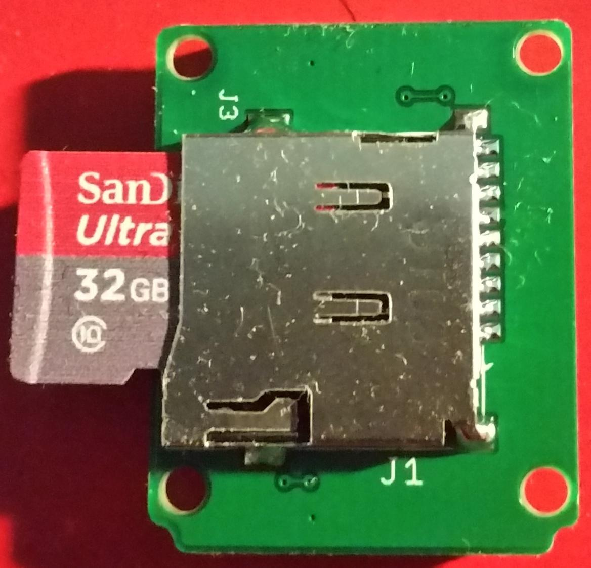

The Xadow - Storage module provides 64K of EEPROM, but for a large amount of storage e.g. a GPS logger the EEPROM will overflow. The Xadow SD board allows use of upto 32GB SDHC cards and is compatible with the SDFat and SD libraries. The Xadow SD can be powered by 3.3V. And it is compatible with Xadow system.
Using Xadow SD upto 32GB SDHC card can be used, for best performance choose a class 10 card.

/*
* This sketch attempts to initialize an SD card and analyze its structure.
*/
#include <SdFat.h>
/*
* SD chip select pin. Common values are:
*
* Arduino Ethernet shield, pin 4.
* SparkFun SD shield, pin 8.
* Adafruit SD shields and modules, pin 10.
* Default SD chip select is the SPI SS pin.
*/
const uint8_t SdChipSelect = A5;
Sd2Card card;
SdVolume vol;
// serial output steam
ArduinoOutStream cout(Serial);
// global for card size
uint32_t cardSize;
// global for card erase size
uint32_t eraseSize;
//------------------------------------------------------------------------------
// store error strings in flash
#define sdErrorMsg(msg) sdErrorMsg_P(PSTR(msg));
void sdErrorMsg_P(const char* str) {
cout << pgm(str) << endl;
if (card.errorCode()) {
cout << pstr("SD errorCode: ");
cout << hex << int(card.errorCode()) << endl;
cout << pstr("SD errorData: ");
cout << int(card.errorData()) << dec << endl;
}
}
//------------------------------------------------------------------------------
uint8_t cidDmp() {
cid_t cid;
if (!card.readCID(&cid)) {
sdErrorMsg("readCID failed");
return false;
}
cout << pstr("\nManufacturer ID: ");
cout << hex << int(cid.mid) << dec << endl;
cout << pstr("OEM ID: ") << cid.oid[0] << cid.oid[1] << endl;
cout << pstr("Product: ");
for (uint8_t i = 0; i < 5; i++) {
cout << cid.pnm[i];
}
cout << pstr("\nVersion: ");
cout << int(cid.prv_n) << '.' << int(cid.prv_m) << endl;
cout << pstr("Serial number: ") << hex << cid.psn << dec << endl;
cout << pstr("Manufacturing date: ");
cout << int(cid.mdt_month) << '/';
cout << (2000 + cid.mdt_year_low + 10 * cid.mdt_year_high) << endl;
cout << endl;
return true;
}
//------------------------------------------------------------------------------
uint8_t csdDmp() {
csd_t csd;
uint8_t eraseSingleBlock;
if (!card.readCSD(&csd)) {
sdErrorMsg("readCSD failed");
return false;
}
if (csd.v1.csd_ver == 0) {
eraseSingleBlock = csd.v1.erase_blk_en;
eraseSize = (csd.v1.sector_size_high << 1) | csd.v1.sector_size_low;
} else if (csd.v2.csd_ver == 1) {
eraseSingleBlock = csd.v2.erase_blk_en;
eraseSize = (csd.v2.sector_size_high << 1) | csd.v2.sector_size_low;
} else {
cout << pstr("csd version error\n");
return false;
}
eraseSize++;
cout << pstr("cardSize: ") << 0.000512*cardSize;
cout << pstr(" MB (MB = 1,000,000 bytes)\n");
cout << pstr("flashEraseSize: ") << int(eraseSize) << pstr(" blocks\n");
cout << pstr("eraseSingleBlock: ");
if (eraseSingleBlock) {
cout << pstr("true\n");
} else {
cout << pstr("false\n");
}
return true;
}
//------------------------------------------------------------------------------
// print partition table
uint8_t partDmp() {
cache_t *p = vol.cacheClear();
if (!p) {
sdErrorMsg("cacheClear failed");
return false;
}
if (!card.readBlock(0, p->data)) {
sdErrorMsg("read MBR failed");
return false;
}
cout << pstr("\nSD Partition Table\n");
cout << pstr("part,boot,type,start,length\n");
for (uint8_t ip = 1; ip < 5; ip++) {
part_t *pt = &p->mbr.part[ip - 1];
cout << int(ip) << ',' << hex << int(pt->boot) << ',' << int(pt->type);
cout << dec << ',' << pt->firstSector <<',' << pt->totalSectors << endl;
}
return true;
}
//------------------------------------------------------------------------------
void volDmp() {
cout << pstr("\nVolume is FAT") << int(vol.fatType()) << endl;
cout << pstr("blocksPerCluster: ") << int(vol.blocksPerCluster()) << endl;
cout << pstr("clusterCount: ") << vol.clusterCount() << endl;
uint32_t volFree = vol.freeClusterCount();
cout << pstr("freeClusters: ") << volFree << endl;
float fs = 0.000512*volFree*vol.blocksPerCluster();
cout << pstr("freeSpace: ") << fs << pstr(" MB (MB = 1,000,000 bytes)\n");
cout << pstr("fatStartBlock: ") << vol.fatStartBlock() << endl;
cout << pstr("fatCount: ") << int(vol.fatCount()) << endl;
cout << pstr("blocksPerFat: ") << vol.blocksPerFat() << endl;
cout << pstr("rootDirStart: ") << vol.rootDirStart() << endl;
cout << pstr("dataStartBlock: ") << vol.dataStartBlock() << endl;
if (vol.dataStartBlock() % eraseSize) {
cout << pstr("Data area is not aligned on flash erase boundaries!\n");
cout << pstr("Download and use formatter from www.sdcard.org/consumer!\n");
}
}
//------------------------------------------------------------------------------
void setup() {
Serial.begin(9600);
while(!Serial) {} // wait for Leonardo
// use uppercase in hex and use 0X base prefix
cout << uppercase << showbase << endl;
// pstr stores strings in flash to save RAM
cout << pstr("SdFat version: ") << SD_FAT_VERSION << endl;
}
//------------------------------------------------------------------------------
void loop() {
// read any existing Serial data
while (Serial.read() >= 0) {}
// pstr stores strings in flash to save RAM
cout << pstr("\ntype any character to start\n");
while (Serial.read() <= 0) {}
delay(400); // catch Due reset problem
uint32_t t = millis();
// initialize the SD card at SPI_HALF_SPEED to avoid bus errors with
// breadboards. use SPI_FULL_SPEED for better performance.
if (!card.init(SPI_HALF_SPEED, SdChipSelect)) {
sdErrorMsg("\ncard.init failed");
return;
}
t = millis() - t;
cardSize = card.cardSize();
if (cardSize == 0) {
sdErrorMsg("cardSize failed");
return;
}
cout << pstr("\ninit time: ") << t << " ms" << endl;
cout << pstr("\nCard type: ");
switch (card.type()) {
case SD_CARD_TYPE_SD1:
cout << pstr("SD1\n");
break;
case SD_CARD_TYPE_SD2:
cout << pstr("SD2\n");
break;
case SD_CARD_TYPE_SDHC:
if (cardSize < 70000000) {
cout << pstr("SDHC\n");
} else {
cout << pstr("SDXC\n");
}
break;
default:
cout << pstr("Unknown\n");
}
if (!cidDmp()) return;
if (!csdDmp()) return;
if (!partDmp()) return;
if (!vol.init(&card)) {
sdErrorMsg("\nvol.init failed");
return;
}
volDmp();
}
The Xadow - SD has also been tested with the powerful Xadow - M0 mainboard. A sample application can be found here